Cartas de Jokers
Los Jokers son las diferentes cartas que podemos comprar a lo largo de la partida que
modificarán
nuestras jugadas, a veces de maneras beneficiosas y a veces de forma negativas, dependiendo la
situación.
¡Por suerte hay muchos donde elegir!
¡Aquí os dejo unos pocos!
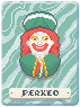
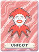
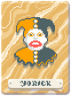
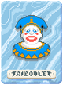
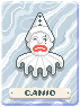
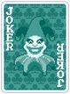
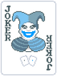
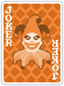
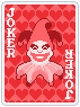
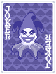
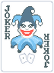
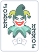
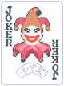
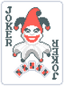
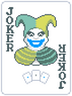
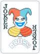
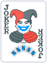
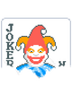
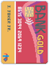
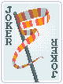
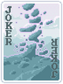
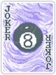
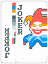
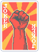
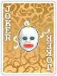
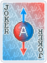
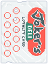
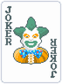
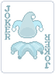
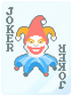
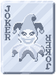
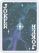
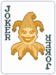
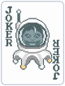
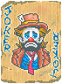
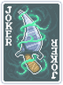
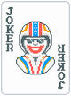
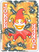
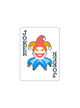
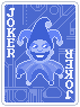